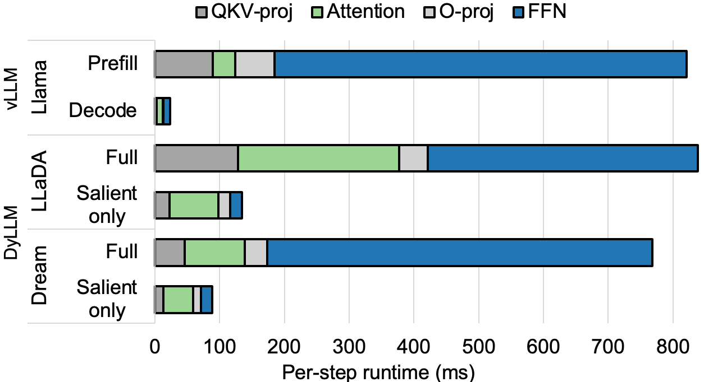
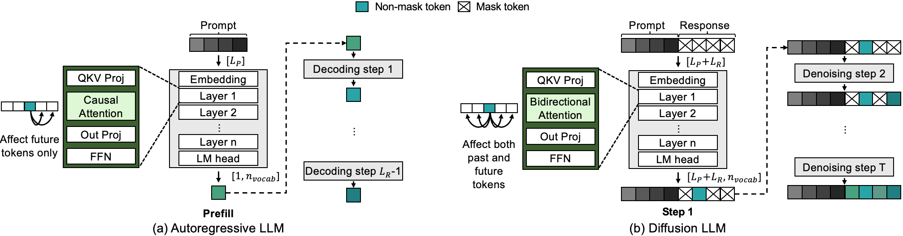
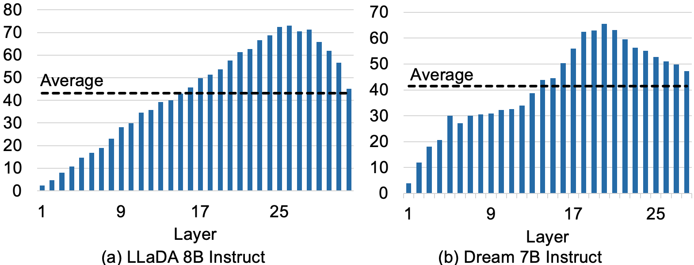
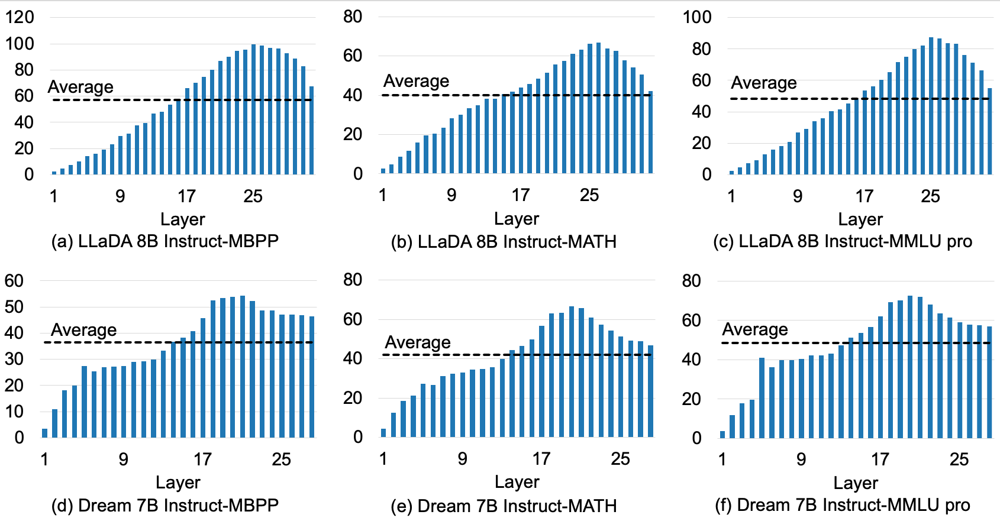
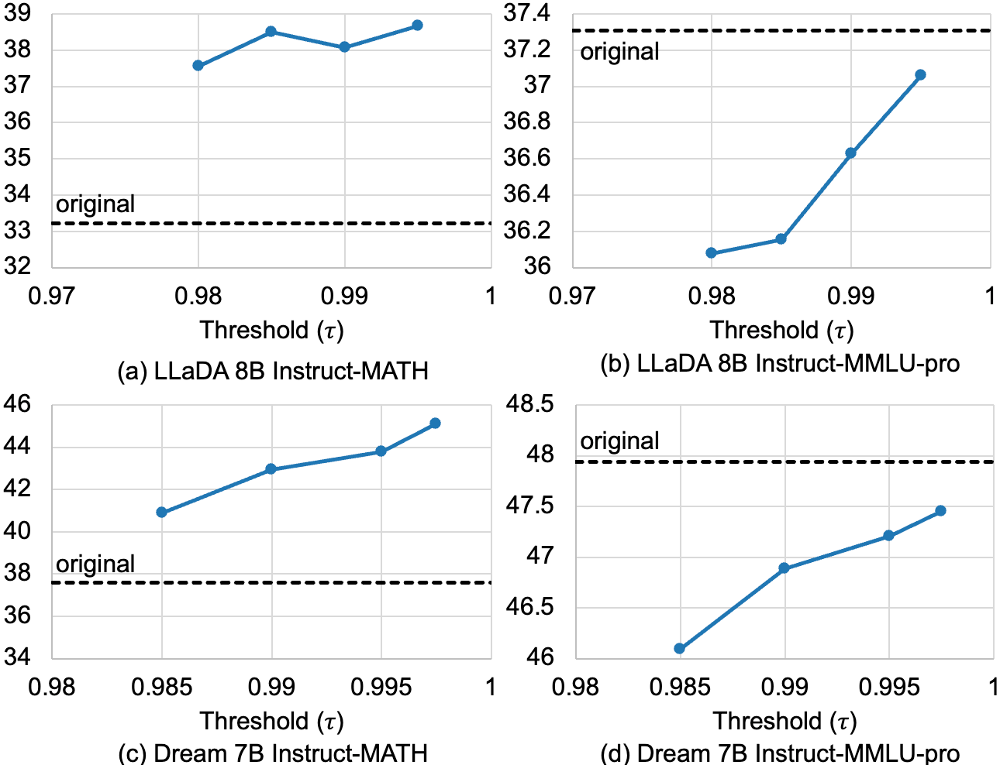

Overview
Masked Diffusion Language Models (MDLMs) offer a promising alternative to autoregressive LLMs by enabling parallel token decoding, but their iterative denoising process incurs severe computational overhead: unlike autoregressive models that use incremental KV caching to process only new tokens per step, MDLMs repeatedly process the entire sequence at every denoising step, leading to "repeated prefill" bottlenecks that offset the benefits of parallel decoding.
The key insight of this work is that most token representations remain highly stable across consecutive diffusion steps, with only a small subset (termed salient tokens) undergoing meaningful changes that contribute to generation quality. Leveraging this temporal sparsity, the authors propose DyLLM, a training-free inference framework that selectively recomputes only salient tokens while reusing cached activations for stable non-salient tokens. DyLLM identifies salient tokens via cosine similarity of attention contexts between adjacent steps, and introduces a saliency-aware approximate attention mechanism to further reduce compute costs. Across reasoning and code generation benchmarks, DyLLM achieves up to 9.6x higher throughput while largely preserving (and sometimes improving) baseline generation accuracy for state-of-the-art MDLMs including LLaDA 8B and Dream 7B.
Key Contributions
- Layer-Adaptive Saliency Mechanism: A dynamic, layer-wise token selection policy that identifies salient tokens based on temporal similarity of attention contexts, eliminating redundant feed-forward network (FFN) computation for stable hidden states.
- Saliency-Aware Approximate Attention: A low-error approximate attention mechanism that exploits activation sparsity to reduce attention complexity from $O(N^2d)$ to $O(N \cdot |\mathcal{A}|d)$, where $|\mathcal{A}|$ is the small number of salient tokens per step.
- Scalable Throughput Improvements: DyLLM scales robustly with increasing parallel decoding degrees, delivering up to 7.6x throughput speedup for LLaDA 8B and 9.6x speedup for Dream 7B across diverse benchmarks while maintaining baseline generation quality.
Method
DyLLM targets the core inefficiency of MDLM inference: repeated full-sequence processing across denoising steps. The runtime breakdown in Figure 1 illustrates the magnitude of this bottleneck: original MDLM inference incurs heavy FFN and attention overhead at every step, while DyLLM reduces per-step compute by focusing only on salient tokens.

The overall DyLLM architecture is shown in Figure 2. DyLLM operates in two phases: an initial warmup phase of 4 full forward passes to initialize caches, followed by an accelerated phase that uses saliency-based selection and approximate attention for all subsequent steps.

Temporal Sparsity Observation
The foundation of DyLLM is the observation that attention context vectors for most tokens are highly stable across consecutive diffusion steps. The authors define temporal cosine similarity to quantify this stability:
$$s_{t,l}^{(i)} = \frac{C_{t,l}^{(i)} \cdot C_{t-1,l}^{(i)}}{\|C_{t,l}^{(i)}\| \|C_{t-1,l}^{(i)}\|}$$ Where $C_{t,l}^{(i)}$ is the attention context vector for token $i$ at layer $l$ and diffusion timestep $t$. Values near 1 indicate nearly identical context vectors, while lower values indicate significant representational change. Figure 3 shows the distribution of $s_{t,l}^{(i)}$ across layers for the GSM8K benchmark: most tokens have similarity values near 1, with deeper layers exhibiting slightly more variability than earlier layers.  ### Salient Token Selection Based on this observation, the authors define salient tokens as those with temporal cosine similarity below a threshold $\tau$: > "We define salient tokens at step $t$ and layer $l$ as a set of indices $\mathcal{A}_{t,l} = \{ i \mid s_{t,l}^{(i)} \le \tau \}$, where $\tau$ is a selection threshold. During timestep $t$, for non-salient tokens ($i \notin \mathcal{A}_{t,l}$), we skip the subsequent FFN computation and reuse the previous state from the KV cache, while only salient tokens undergo full re-computation." Figures 4 and 5 show the number of salient tokens selected across steps and layers, confirming that only a small fraction of tokens require recomputation at each step:
### Salient Token Selection Based on this observation, the authors define salient tokens as those with temporal cosine similarity below a threshold $\tau$: > "We define salient tokens at step $t$ and layer $l$ as a set of indices $\mathcal{A}_{t,l} = \{ i \mid s_{t,l}^{(i)} \le \tau \}$, where $\tau$ is a selection threshold. During timestep $t$, for non-salient tokens ($i \notin \mathcal{A}_{t,l}$), we skip the subsequent FFN computation and reuse the previous state from the KV cache, while only salient tokens undergo full re-computation." Figures 4 and 5 show the number of salient tokens selected across steps and layers, confirming that only a small fraction of tokens require recomputation at each step:


The authors provide two formal propositions to validate the use of cosine similarity as a saliency metric: 1. Scale Invariance under Linear Projection: $$\text{RMSNorm}((\alpha C) W_o) = \text{RMSNorm}(C W_o)$$ This formula confirms that the magnitude of the attention context vector $C$ does not affect the input to the FFN after projection via $W_o$ and RMSNorm, only the direction of the vector matters, validating the use of direction-sensitive cosine similarity as a saliency metric. 2. Error Bound via Directional Alignment: $$\delta \;\le\; \kappa(W_o)\sqrt{2(1 - s_{t,l})}$$ Where $\delta$ is the approximation error between FFN inputs from consecutive steps, and $\kappa(W_o)$ is the condition number of the attention output projection matrix. This bound proves that higher cosine similarity $s_{t,l}$ leads to lower error when reusing cached activations for non-salient tokens. ### Saliency-Aware Approximate Attention To further reduce attention overhead, the authors introduce a dual-path approximate attention mechanism, shown in Figure 6. The mechanism leverages the decomposition of the temporal change in attention context: $$\begin{aligned}\Delta C_{t,l} &=(S_{t-1, l} + \Delta S)(V_{t-1,l}+\Delta V) - S_{t-1, l}V_{t-1, l} \\
&= (S_{t-1, l} + \Delta S)\Delta V + (\Delta S)V_{t-1,l}
\end{aligned}$$
Where $\Delta S$ is the change in attention scores and $\Delta V$ is the change in value vectors between consecutive steps.

The two execution paths are:
- Salient Path (Exact Update): For tokens in $\mathcal{A}_{t,l}$, full exact attention is computed to capture dynamic changes in attention patterns.
- Non-Salient Path (Approximate Update): For stable tokens not in $\mathcal{A}_{t,l}$, attention scores are reused from the previous step, and context updates are only computed from salient tokens, reducing compute complexity significantly.
Figure 7 confirms that the approximate attention mechanism introduces minimal error, with cosine similarity between approximate and exact attention outputs exceeding 0.99 for 90% of tokens:

DyLLM also includes a response-only optimization: since prompt tokens are static and rarely salient, DyLLM periodically refreshes prompt token activations every 4 steps, and focuses only on response tokens for intermediate steps.
Experiments
All experiments were run on a single NVIDIA H100 PCIe 80GB GPU, evaluating LLaDA 8B Instruct and Dream 7B Instruct against three baselines: original model implementation, Fast-dLLM (Prefix and Dual variants), and dLLM-Cache. Benchmarks included mathematical reasoning (GSM8K, MATH), general knowledge (MMLU-pro), and code generation (MBPP).
Saliency Impact on Accuracy
Table 1 shows that restricting FFN computation to salient tokens preserves or improves accuracy across benchmarks, as it suppresses noise from low-relevance tokens:
Table 1: Impact of Saliency-based FFN and Approximate Attention on Accuracy
| Benchmark | Model | Threshold | Original | Salient Only | Salient + Approx |
|---|---|---|---|---|---|
| GSM8K | LLaDA | 0.995 | 77.79 | 78.09 | 78.01 |
| GSM8K | LLaDA | 0.99 | 77.79 | 78.85 | 79.08 |
| GSM8K | LLaDA | 0.985 | 77.79 | 78.62 | 79.00 |
| GSM8K | Dream | 0.9975 | 75.59 | 79.98 | 79.30 |
| GSM8K | Dream | 0.995 | 75.59 | 79.98 | 78.09 |
| MBPP | LLaDA | 0.99 | 29.20 | 28.00 | 30.00 |
| MBPP | Dream | 0.9975 | 54.60 | 56.00 | 56.80 |
Main Results
Table 2 summarizes the main accuracy and throughput results for $n_u=1$ (1 token unmasked per step):
Table 2: Main Accuracy and Throughput Results (accuracy: black, throughput (token/s): blue, speedup: orange)
| Model | Benchmark | Original | DyLLM (τ=0.995) | DyLLM (τ=0.99) | Fast-Prefix | Fast-Dual | dLLM-Cache |
|---|---|---|---|---|---|---|---|
| LLaDA 8B | GSM8K Acc | 77.79 | 78.01 | 79.08 | 77.18 | 78.24 | 77.18 |
| GSM8K Throughput | 11.47 (×1.00) | 80.15 (×6.99) | 87.21 (×7.60) | 51.05 (×4.45) | 75.24 (×6.56) | 36.77 (×3.21) | |
| MBPP Acc | 29.20 | 28.20 | 30.00 | 25.40 | 25.40 | 29.00 | |
| MBPP Throughput | 33.11 (×1.00) | 151.27 (×4.57) | 169.62 (×5.12) | 116.27 (×3.51) | 165.44 (×5.00) | 93.04 (×2.81) | |
| Dream 7B | GSM8K Acc | 75.59 | 79.30 | 78.09 | 74.45 | 68.39 | 72.40 |
| GSM8K Throughput | 12.57 (×1.00) | 111.79 (×8.89) | 120.62 (×9.60) | 43.32 (×3.45) | 153.21 (×12.19) | 46.19 (×3.67) | |
| MBPP Acc | 54.60 | 56.80 | 55.40 | 53.80 | 51.60 | 52.80 | |
| MBPP Throughput | 19.62 (×1.00) | 139.62 (×7.12) | 141.56 (×7.22) | 62.96 (×3.21) | 205.40 (×10.47) | 61.06 (×3.11) |
DyLLM outperforms all baselines in accuracy-throughput tradeoff, delivering state-of-the-art speedups while preserving or improving baseline accuracy. Ablation results in Figures 8 and 9 confirm that both the saliency selection and approximate attention components contribute to these gains:


Figure 10 shows the end-to-end throughput vs accuracy tradeoff across all 8 benchmark-model combinations, confirming DyLLM's consistent superiority over competing methods:

Limitations & Future Work
- DyLLM currently uses a fixed global threshold $\tau$ for saliency selection; future work will develop adaptive per-layer, per-dataset thresholding to further optimize the accuracy-efficiency tradeoff.
- The current implementation does not integrate confidence-aware decoding schemes, which could deliver additional throughput gains with minimal accuracy loss.
- Extending DyLLM to support very long sequence lengths (100k+ tokens) and larger batch sizes is a key direction for future work, as is optimizing custom CUDA kernels for the saliency selection and approximate attention operations to further improve speedups.
- DyLLM has only been evaluated on semi-autoregressive MDLMs; extending it to fully parallel MDLM decoding schemes is another promising future direction.